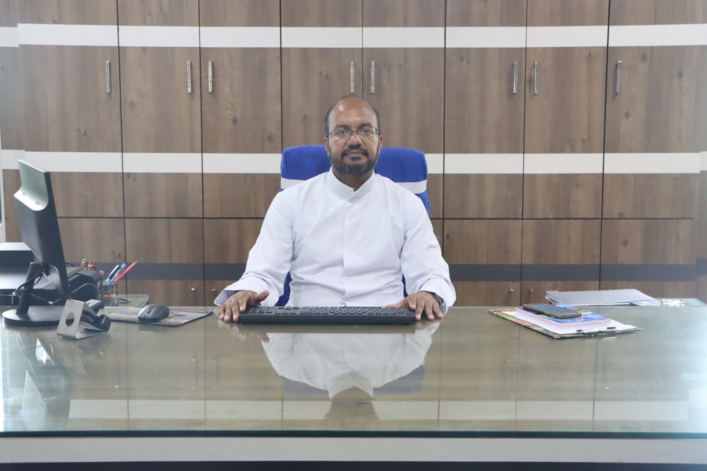
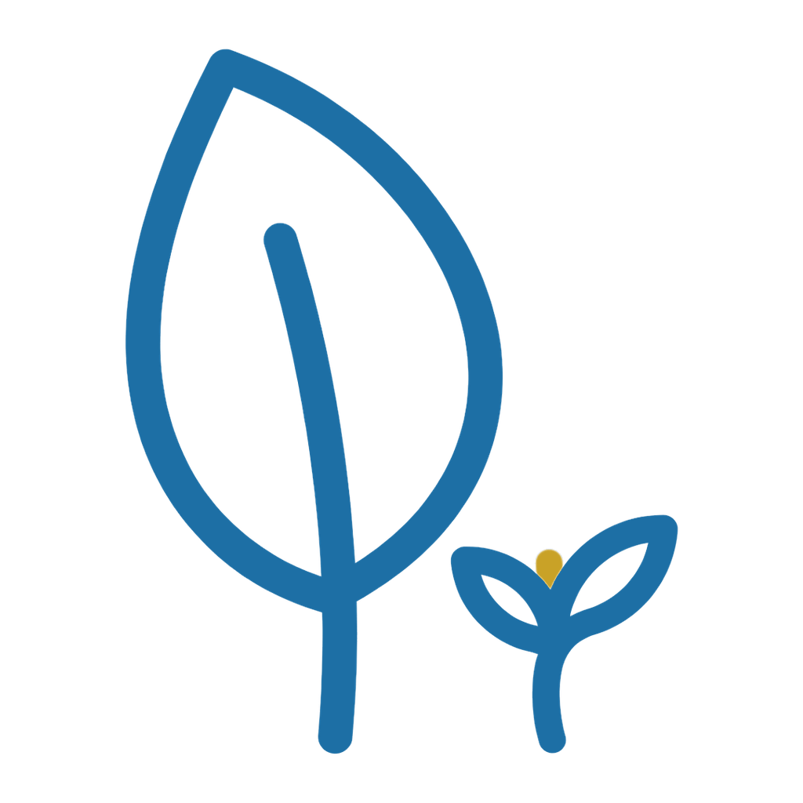
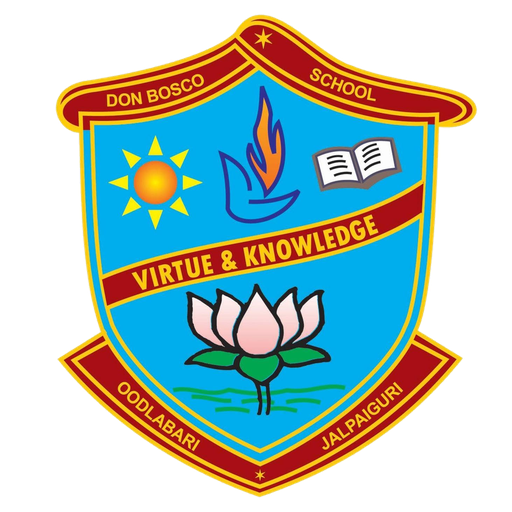
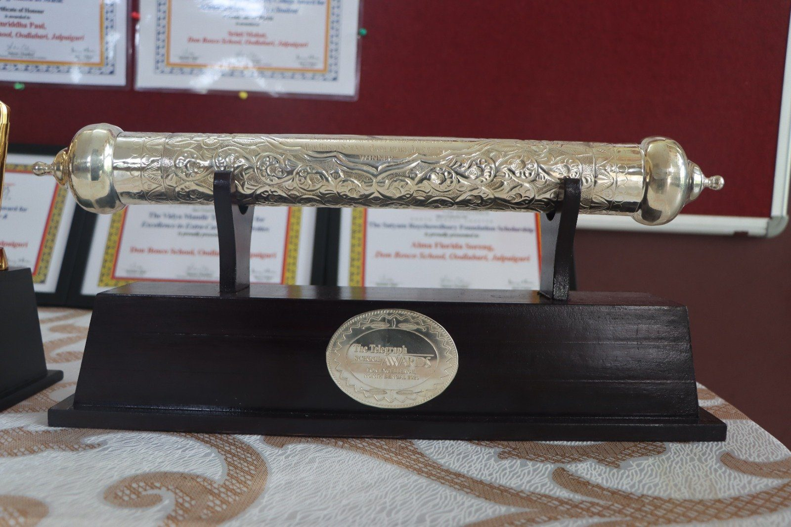

About the school
A Salesian school in the Dooars, established in 2007, teaching children from UKG to Class XII.

Our story
Don Bosco School Oodlabari was established in 2007. It was the brainchild of Fr. Francis V.L., the school's first principal. It began with just UKG and Class 1.
The school is owned and administered by the Salesians of Don Bosco, North India. It is a Catholic minority institution, English-medium and co-educational, affiliated to the Council for the Indian School Certificate Examinations, New Delhi, with School Code WB366.
It stands at Oodlabari, on Kranti Road, in the tea gardens at the foothills of the Himalayas, and serves families across the Dooars. Oodlabari itself is a town of 14,194 people (2011 Census), spread over about 9.28 sq km, set among tea gardens, the Baikunthapur forests and the Kadambari ranges, with the Leesh River nearby.

Principals of the school
Fr. Francis V.L.
Fr. Panapurayil Mathew
Fr. Tomy Mathew
Fr. Sanjay Manohar Kujur
Fr. Tijo Thomas
Fr. (Dr.) Aju Kurian
From the Principal
Our aim is to shape students who are not only academically proficient but also morally grounded and equipped to face the challenges of a rapidly changing world.
Fr. (Dr.) Aju Kurian, SDB
Principal, Rector and Secretary
The Principal's message sets out six priorities for the school, in his own words:
- Empowering Educators. Training teachers with academic tools and emotional intelligence to support each child with care.
- Beyond Marks. Encouraging skill-based learning that fosters creativity, critical thinking, and personal growth.
- Values and Life Skills. Instilling core values like honesty, humility, and courage through life skills education.
- Discipline with Dignity. Fostering a culture of mutual respect, confidence, and responsibility.
- Learning from Nature. Inspiring environmental awareness and stewardship through outdoor learning.
- Digital Balance. Promoting healthy technology habits and social-emotional well-being.
His message closes: "Welcome to the new academic year — a year to dream big, act with purpose, and shine with God's blessings."

Vision
To build a virtuous society where everyone lives in harmony with God and nature through the holistic, value-based education of our students.
Mission
The school's mission is the holistic development of every child into a young person who is physically strong, intellectually competent, emotionally balanced, socially committed, morally upright, environmentally sensitive, and spiritually enlightened, and who contributes to nation-building.
The school's patron is St. John Bosco, born in 1815 at Becchi, Italy, ordained a Catholic priest in 1841, and founder of the Salesians in 1859. His Preventive System, reason, relationship and religion, guides how the school educates.
Core values
- Integrity
- Compassion
- Self-Discipline
- Love of God

Love for Nature- Respect for Others
- Spirituality
Why families choose Don Bosco
Nine reasons the school gives for itself, in its own words.
- Holistic Support
- Presence in Promoting Social Change
- Qualified Formation
- Scientific Reflection and Outreach
- National and International Collaboration
- Salesian Identity
- Critical Reflection
- Family Spirit
- Promoting Education and Communication

The coat of arms
The school crest carries the motto "Virtue and Knowledge". The shield stands for protection, and each emblem inside it carries a meaning every Bosconian learns to read.
The emblems
- Sun
- Knowledge, light and enlightenment.
- Lamp
- The light of learning.
- Open book
- Knowledge, wisdom and learning.
- Lotus
- Purity, beauty and enlightenment.
The colours
- Gold
- Excellence and achievement.
- Blue
- Trust and wisdom.
- Red
- Energy and passion.
- Silver
- Clarity and truth.
The shield is framed in red for courage and valour, with a silver outline for peace and wisdom.
The school anthem
Sung at school gatherings, the anthem calls the school the Beacon of the Dooars; the chorus follows each verse.
Chorus
Let us be true armour of Light
And exalt our school’s mighty name
We bow to you in solemn pledge
To stand for goodness and truth
Verse 1
Beacon of Dooars, Don Bosco dear,
Forever bound our hearts are here
Brimming with virtue and knowledge
our place in the world you’ve secure.
Verse 2
We, thy loyal and trusted band,
Forever, we’ll stay just and true,
A beacon of light for all to see
Adding worthiness to your great name
Verse 3
Hail Bosco, you’re always our home,
the seeds of ethics and values are sown.
Like a potter, you mould and guide us
With courage and conviction for life’s sojourn
Leadership
The school is led by its Rector and Principal, with a Vice Principal, Vice Rector and Campus Minister.
- Fr. (Dr.) Aju Kurian, SDBPrincipal, Rector and Secretary
- Fr. John SelvanVice Principal and Administrator
- Fr. (Dr.) Antony VayalilVice Rector
- Fr. Sunit KiroCampus Minister
School hours
Summer
Winter
The school's 57 teachers, with their subjects, are listed on the staff page.
Managing Committee, 2025–26
The committee that governs the school, as published by the school for the 2025–26 session.
Office bearers
- PresidentFr. Babu Joseph
- Secretary and PrincipalFr. (Dr.) Aju Kurian
- TreasurerFr. John Selvan
Members
- MemberFr. (Dr.) Antony Vayalil
- MemberFr. Sunit Kiro
- MemberSr. Shemi Jose
Representatives
- Teachers' representativeMr. Suvojit Biswas
- Teachers' representativeMrs. Mary Lai
- Support staff representativeMr. Roshan Toppo
- Parent representativeMr. Sanjay Kujur
- Parent representativeMr. Ayan Chakraborty
Awards and recognition
Honours the school has received in recent years, as published by the school.



Drag sideways, use the arrows, or press the left and right arrow keys.
2026
- Minervaa Edu Achievement Awards: Certificate of Excellence for Consistent Scholastic Achievement, 19 September 2026.
- The Telegraph School Awards, North Bengal Chapter: Vidya Mandir Trust award for extra-curricular activities, 29 September 2026.
- The Telegraph School Awards: Sister Nivedita University award for maintenance and eco-friendly environment, 29 September 2026.
- The Telegraph School Awards: TTEF award for social service, 29 September 2026.
- The Telegraph School Awards: IIHM award for academics (ICSE), 29 September 2026.
- The Telegraph School Awards: Caring Minds "A School that Cares", 29 Sept 2026.
- Dr A P O'Brien Memorial Lifetime Achievement Award for a Teacher, presented to Mary Lai, 29 September 2026.
- Yoga Sangam Patra, International Yoga Day, 21 June 2026, with 150 participants.
- Swachhata Hi Seva 2026, certificate of participation.
- Ek Ped Maa Ke Naam 3.0, for planting 480 saplings.
2025
- Minervaa Edu Achievement Awards: ICSE School of the Year, Eastern India, for Best Infrastructure Excellence, 30–31 August 2025.
- The Telegraph School Awards: IIHM award for academics (ICSE), 8 November 2025.
- The Telegraph School Awards: Vidya Mandir Trust award for extra-curriculars, 8 Nov 2025.
- The Telegraph School Awards: TTEF award for maintenance and eco-friendly environment, 8 November 2025.
- The Telegraph School Awards: TTEF award for social service, 8 November 2025.
- The Telegraph School Awards: Caring Minds "A School that Cares", 8 Nov 2025.
- National Sports Day 2025, certificate of participation.
2024
- The Telegraph School Awards: Vidya Mandir Trust, IIHM, and JIS University awards, 19 October 2024.
2023
- The Telegraph School Awards: IIHM, Ambuja Neotia, and Luxmi Group awards, 28 November 2023.
The school also holds Fit India recognition.
Admissions open for UKG to Class 11
Forms close 10 December 2026. See the dates, the process and the documents needed.